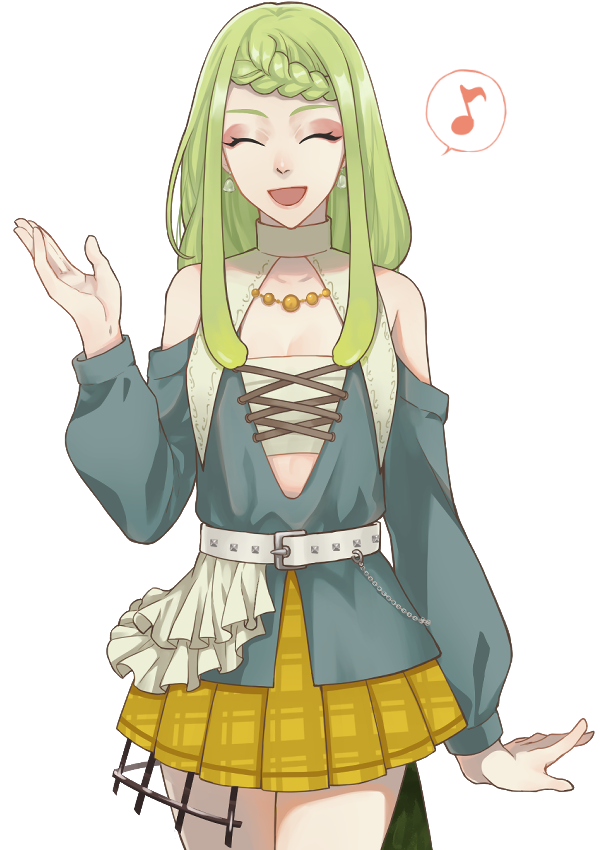
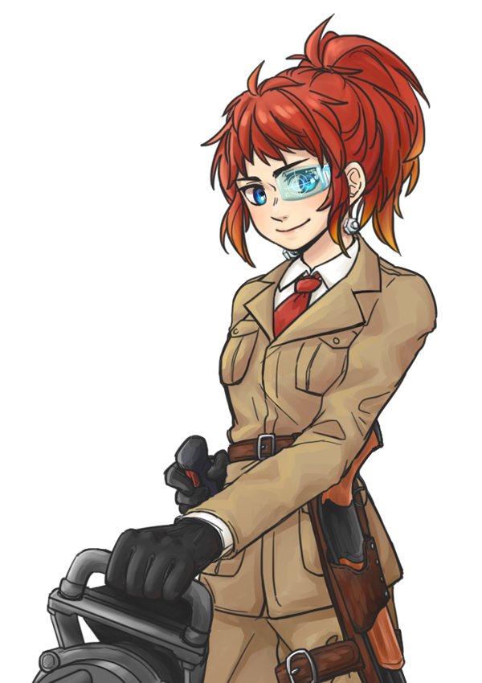
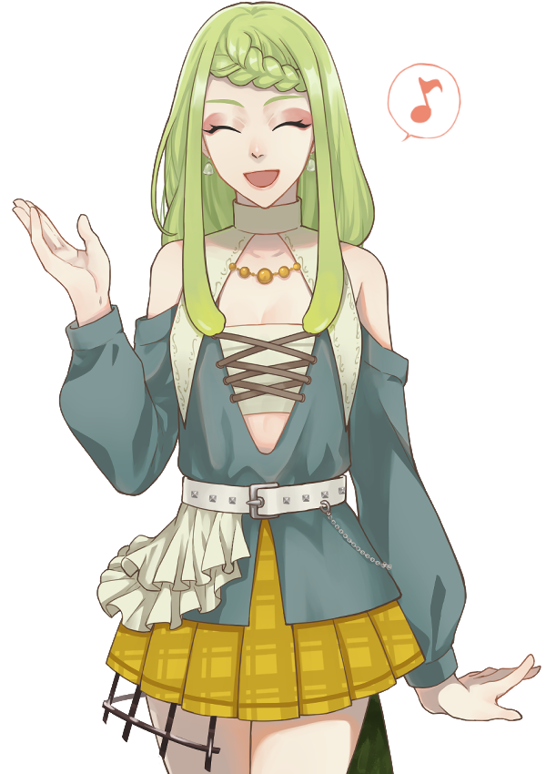
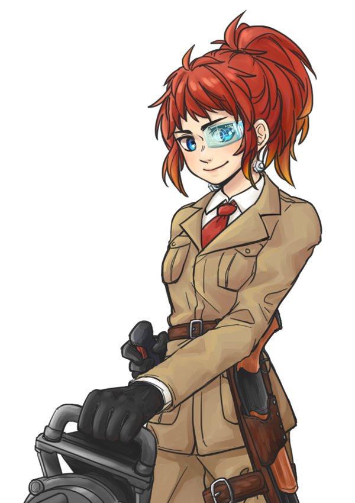

- 死者之國
- 六姊妹
- 居民列表
- 登記入籍
-
死者之國被高聳的城牆圍起，對外的出口僅有東西南北四個大門。
除了東北方的曠野之外，死者之國被生態豐富的變異森林圍繞。
在生存競爭激烈的森林中，生物逐漸變得殘暴，更藏有許多未知怪物的危險。
雖是臨危而居，但也意味著能夠從中獲得豐富的資源。
而在死者之國裡尚未整頓完成的廢墟中，也有著危害程度很低的小小生態系。
死者之國無論行政、醫療設施均集中於中央建築。
中央建築周邊的廣場也作為傳遞事項和發布委託的重要地點。
-


 

-
暫不開放
-
暫不開放


在這裡你永遠不會孤單的呦，杉杉和大家一直都在身邊的。